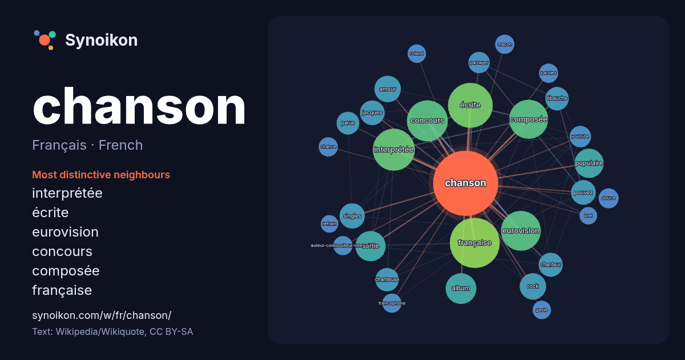

Français · French · word of the day list
chanson
“song” · The words found around it in 1110 instances from French Wikipedia, Wikiquote.

Most distinctive neighbours
- interprétée 54×
- écrite 53×
- eurovision 50×
- concours 39×
- composée 36×
- française 29×
- amour 22×
- pouvez 21×
- sortie 19×
- ébauche 19×
- rock 18×
- parue 17×
- populaire 17×
- chanteuse 15×
- partager 15×
- chanteur 15×
- singles 15×
- youtube 15×
- album 14×
- jacques 13×
× = how many times more often than in general French Wikipedia text.
Most frequent neighbours
- française 82
- écrite 66
- interprétée 58
- concours 55
- eurovision 52
- composée 50
- groupe 41
- album 31
- français 31
- sortie 30
- populaire 28
- amour 23
- rock 23
- france 22
- singles 21
- jacques 20
- pouvez 20
- chanteur 19
- chanteuse 18
- ébauche 18
In context
- Pour les articles homonymes, voir Chanson (homonymie) et chant (homonymie). Cet article ne cite pas suffisamment ses sources (février 2025). Si vous disposez Wikipedia snippets · Chanson
- le premier single du premier album du chanteur français Grégoire. Cette chanson est sortie le 30 juin 2008 et a été écrite et composée par le chanteur Wikipedia snippets · Toi + Moi (chanson)
- Chanson populaire Singles de Claude François Pistes de Chanson populaire Chanson populaire (Ça s'en va et ça revient, titre alternatif) est une chanson Wikipedia snippets · Chanson populaire (chanson)
- Pour des articles plus généraux, voir Chanson et Musique française. Les informations figurant dans cet article ou cette section doivent être reliées aux Wikipedia snippets · Chanson française
- - Et moi, et moi, et moi », sur YouTube Et moi, et moi, et moi est une chanson française de l'auteur-compositeur-interprète Jacques Dutronc, écrite par Wikipedia snippets · Et moi, et moi, et moi (chanson)
- considérée comme l'une des plus grandes chansons françaises. Brel s'installe définitivement comme une valeur sûre de la chanson, comme auteur mais aussi comme Wikipedia snippets · Jacques Brel
- changé ma chanson, ma Dalida en 1961. Singles de Dalida Ils ont changé ma chanson, ma est l'adaptation française, par Maurice Vidalin, de la chanson anglaise Wikipedia snippets · Ils ont changé ma chanson, ma (chanson)
- Pour les articles homonymes, voir Chanson (homonymie) et Roland (homonymie). La Chanson de Roland est une célèbre chanson de geste de la fin du XIe siècle Wikipedia snippets · Chanson de Roland
More French words
- art
- automne
- carte
- chat
- chemin
- cheval
- chien
- climat
- cloche
- cœur
- dieu
- désert
- eau
- famille
- forêt
- histoire
- hiver
- horloge
- jardin
- langue
- miel
- miroir
- monnaie
- montagne
- mort
- mère
- nature
- nourriture
- ombre
- pain
- pluie
- pont
- pouvoir
- printemps
- santé
- science
- sel
- silence
- temps
- tempête
- thé
- train
- travail
- trésor
- vie
- ville
- vérité
- étoile
- île
Precomputed on 2026-10-09 with default settings (±5 words, medium corpus). The interactive map can refresh it with live data.